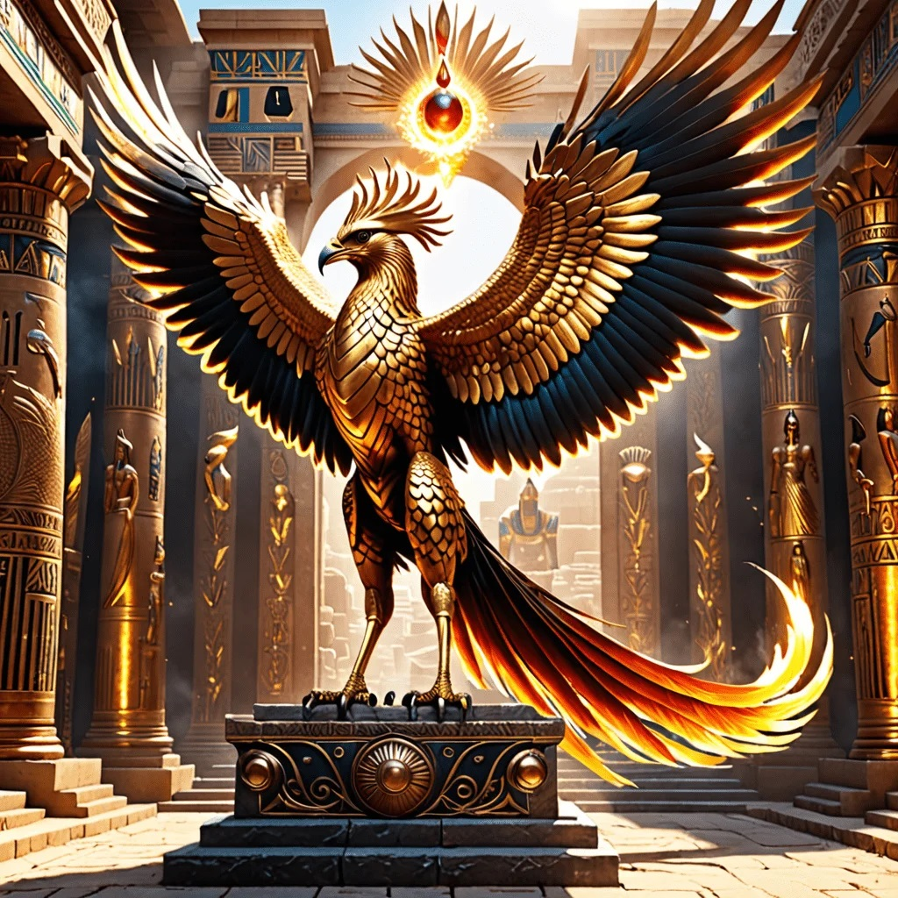
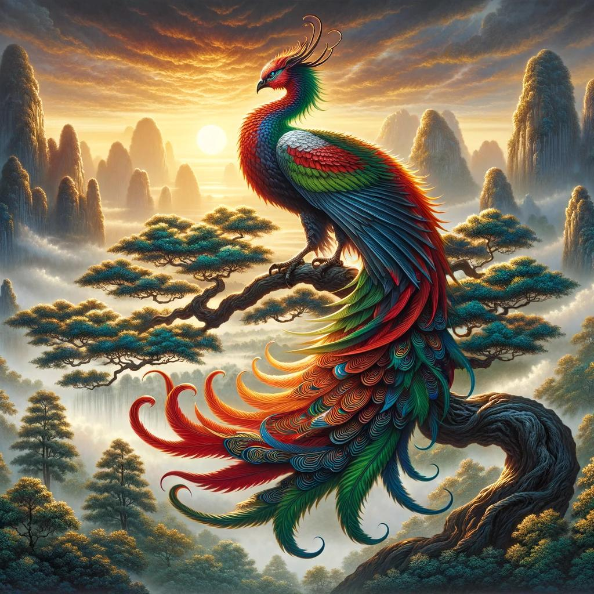

The Phoenix invthe Egyptian Mythology
The Legend of the Phoenix in Egyptian Mythology is a tale of a mythical bird that symbolizes renewal and rebirth. It is said that the Phoenix lived for centuries before consuming itself in flames, only to emerge from its ashes anew, representing eternal life and regeneration.
In Egyptian Mythology, the Phoenix is often portrayed as a majestic bird with vibrant plumage, resembling an eagle or a heron. Its association with the sun and longevity ties it to concepts of immortality and the cyclical nature of life.
The Phoenix is revered in Egyptian mythology for its symbolic representation of life, death, and resurrection. It serves as a powerful emblem of hope and the eternal cycle of creation and destruction, embodying the idea of continuous renewal.
|

|
The Phoenix in the Greek Mythology
the Phoenix in Greek mythology serves as a powerful symbol of immortality and rebirth, with rich origins and characteristics that continue to inspire. From ancient literature to modern interpretations, the Phoenix embodies themes of resilience, transformation, and hope.Reflecting on the enduring power of the Phoenix myth reminds us of the cyclical nature of existence and the potential for renewal in our own lives. The Phoenix not only symbolizes the beauty of life’s cycles but also stands as a testament to the human spirit’s capacity to rise, evolve, and thrive despite adversity.
|
|
The Phoenix in the Persan Mythology
The Simurgh bird, the phoenix,is a mythical creature in Persian culture, has captivated minds throughout the ages. Believed to possess immense wisdom and ancient knowledge, it serves as a mediator between heaven and earth.In Shahnameh, the epic Persian tale, the Simurgh plays a significant role in the story of Prince Zal. With its rich symbolism and representation of spiritual awakening, the Simurgh has also found its place in art, architecture, and even popular culture.
|

|
The Phoenix in the Chineese Mythology
The Fenghuang,the phoenix,is also known as the Chinese phoenix, is a mythological bird of great significance in Chinese culture. With its multicolored feathers and association with the Sun, it is considered the King of Birds, representing virtue, courtesy, benevolence, love, and faith.
|

|